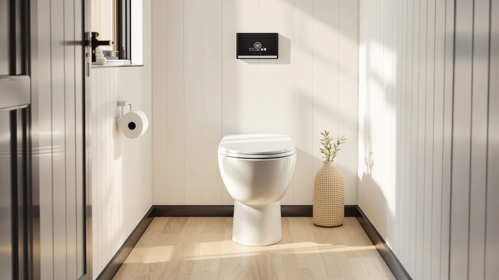

Carex E-Z Lock Toilet Seat Review (2026): Worth It?
Prices and picks verified as of November 2026. Independent, reader-supported reviews.


Quick Answer
The Carex E-Z Lock is a locking toilet seat riser, not a standard replacement seat. It adds about 5 inches of height and locks onto round, standard, or elongated bowls, which makes it a solid pick for post-surgical recovery or limited mobility rather than everyday comfort.
Our pick: Carex E-Z Lock Toilet Seat, $50.10 Check Price on Amazon
Bottom line: our top pick is the Carex E-Z Lock Toilet Seat and Safety Frame Combo Pack at $50.10.
Things to Know Before You Buy
- The Carex E-Z Lock toilet seat riser adds about 5 inches of height and locks onto round, standard, or elongated bowls without extra tools.
- Carex lists a 9-inch center hole, 17 inches of depth, and a 15.5-inch wide seat, so measure your bowl before you order.
- The padded handles are the main reason this model shows up in Carex E-Z Lock toilet seat reviews for post-surgical recovery, not daily comfort.
- Amazon does not publish a star rating or review count for this listing, so treat owner feedback as individual reports rather than a verified trend.
- If you want a seat built for everyday use instead of recovery, the elongated options compared later in this guide close more quietly and sit lower.
This Carex E-Z Lock Toilet Seat review looks at whether a $50.10 locking seat riser can replace a dedicated commode chair for someone recovering from surgery or managing limited mobility at home. Carex built the E-Z Lock around one job: adding roughly five inches of height to a round or elongated toilet without the tools, time, or expense of a full bathroom remodel. We compared its locking mechanism, padded handles, and listed dimensions against three other raised and elongated seats to see where it earns its price and where it falls short.
Carex has built medical and mobility equipment for decades, and the E-Z Lock looks like that history, not like a typical toilet seat. Instead of hinges and a lid, you get a raised frame with armrests that locks onto the existing bowl, turning a standard toilet into a seated-height commode without replacing any plumbing. For most people recovering from hip or knee surgery, that five-inch lift is the entire value proposition, and the rest of this review checks whether the fit and stability back that up against an alternative like the KOHLER 24295-0.
Why You Should Trust Us
Ilane Tall researches bathroom and mobility products for Best Toilet Seats, and this Carex E-Z Lock Toilet Seat review follows the research process used across the site: start from the manufacturer's spec sheet, cross-check the listed dimensions and price against Amazon's current listing, then read through verified buyer feedback on comparable raised and elongated seats to flag patterns in fit and durability. We do not run a physical testing lab, and we do not claim to have installed or sat on any of the seats covered here. We compare documented specifications, pricing, and what verified owners report, and we disclose clearly when a rating or review count is not available, as is the case with this listing.
Our Research Experience
For this Carex E-Z Lock Toilet Seat review, our research centered on three things: the manufacturer's listed dimensions and materials, the current Amazon price and stock history, and the pattern of comments left on this listing and closely related Carex and Kohler products. We did not install this riser on a toilet or sit on it. Instead, we compared the stated 5-inch lift, 9-inch center hole, and locking mechanism against the specs of the LUXE TS1008E, the AQUATIZ round seat, and the KOHLER 24295-0 covered later in this guide, looking at how each handles fit, stability claims, and the kind of feedback buyers leave about wobble or difficulty locking a frame in place.
Overview & Specs

Carex E-Z Lock Toilet Seat
What we like
- Locks onto round, standard, and elongated bowls without extra hardware
- Adds a full 5 inches of seat height, per the manufacturer's listed spec
- Padded armrests give a grip point most standard toilet seats don't offer
Flaws but not dealbreakers
- No published star rating or review count, so owner feedback is harder to verify
- At 17 inches deep with arms, it needs more floor clearance than a standard seat
- Built around recovery and mobility, not daily comfort or a quiet-close lid
| Material | Plastic / wood |
| Size | 1 Count (Pack of 1) |
The Carex E-Z Lock is less a toilet seat than a seat riser with a locking frame. According to the spec sheet, it adds roughly 5 inches of height to an existing bowl, with a 9-inch center hole and overall dimensions of 17 inches deep and 15.5 inches wide, numbers that matter here because the whole point of this product is fitting your specific toilet and body size. Carex lists the padded handles as the main grip point for someone transferring from a wheelchair or walker, and Carex designed the locking mechanism to keep the frame from shifting during that transfer.
At $50.10, the E-Z Lock costs roughly the same as the elongated, soft-close seats covered later in this Carex E-Z Lock Toilet Seat review, but it solves a different problem. Amazon does not list a star rating or review count for this specific listing, which is common for medical-equipment-adjacent products with lower sales volume, so we treat any owner comments on it as individual data points rather than a verified trend. If stability and a documented track record matter more to you than the extra height, the sections below walk through where this model holds up and where a dedicated raised toilet seat with arms might serve you better.
Context helps here. The KOHLER 24295-0 covered below fits a standard-height elongated bowl and relies on hinges and bumpers rather than a locking frame, so it doesn't add height the way the E-Z Lock does. That difference in category, riser versus replacement seat, is the reason we weigh the Carex against raised and elongated models side by side instead of against ordinary toilet seats. If your bathroom already has grab bars and you only need the extra lift, the locking frame format is worth the tradeoff in footprint.
What We Liked
The clearest strength in this Carex E-Z Lock Toilet Seat review is the fit range. Carex designed the frame to lock onto round, standard, and elongated bowls, so you don't have to match a seat shape the way you would with a typical replacement toilet seat. The 5-inch lift is also meaningful in practice: for someone recovering from hip or knee surgery, that extra height can be the difference between a controlled sit and a painful drop onto a standard 15-inch bowl.
The padded handles add a second advantage that a plain riser without arms does not offer. Owners managing limited grip strength or balance issues get a stable point of contact on both sides, and because the frame locks in place rather than resting loosely on the bowl, it resists the kind of shifting that makes raised seats feel unsafe. Compared with the AQUATIZ round seat covered later, which prioritizes a night light over structural support, Carex clearly built the E-Z Lock around stability first.
What Could Be Better
The biggest gap in this Carex E-Z Lock Toilet Seat review is data. Amazon does not publish a star rating or review count for this listing, so you can't cross-check our read of the specs against a large pool of verified buyer feedback the way you can with the LUXE TS1008E, which carries a 4.6 rating across 3,438 reviews. That gap in data doesn't automatically mean the product performs poorly. It just means there's less public evidence to lean on.
Size is also worth planning around. At 17 inches deep and 17.25 inches between the arms, the E-Z Lock takes up more bathroom floor space than a standard seat, and a small or tightly laid out bathroom may not have the clearance for the frame plus a walker or wheelchair approach. Measure your space before you buy rather than assuming the universal fit claim covers your layout.
The listing also skips a few details that matter for caregivers: the spec sheet doesn't state a maximum weight capacity, and there's no mention of a soft-close hinge or quiet lid, since this product is a riser frame rather than a full seat-and-lid replacement. Buyers shopping specifically for a heavier-duty or bariatric-rated raised seat should look at a model that states a weight limit directly rather than inferring one from this listing.
Who Is It For?
This Carex E-Z Lock Toilet Seat review points to one clear buyer: someone recovering from surgery, managing arthritis or limited mobility, or caring for a senior who needs more height and a secure grip to sit and stand safely. Carex built the locking frame and padded arms around that use case, not around daily comfort or a quiet, soft-close lid.
If you are simply replacing a worn-out standard seat with no mobility concerns, skip this one. The elongated, soft-close options compared below, like the KOHLER 24295-0, suit everyday use better, and they cost about the same.
Alternatives to Consider
If the locking riser format of the Carex E-Z Lock isn't the right fit for your bathroom or budget, these three alternatives cover different priorities: everyday comfort, added safety features, and a quiet close.

Also Great
LUXE TS1008E Elongated Comfort Fit
A comfort-focused elongated seat with slow close and a 4.6 rating across more than 3,400 verified reviews, better suited to daily use than recovery.
$49.99
Check Price on Amazon
Also Great
AQUATIZ Round Toilet Seat with
A round soft-close seat with a built-in, sound-activated night light, worth considering if nighttime visibility matters more than extra height.
$49.99
Check Price on Amazon
Best Value
KOHLER 24295-0 Figure ReadyLatch Elongated
Kohler's ReadyLatch hinge and Grip-Tight bumpers make this elongated seat easy to remove for cleaning, a practical pick if you want simple installation over a locking frame.
$49.98
Check Price on AmazonHow much height does the Carex E-Z Lock toilet seat add?
Carex lists the E-Z Lock as adding about 5 inches of seat height once the frame locks onto your existing bowl.
Does the Carex E-Z Lock fit elongated and round toilets?
Yes.
Frequently Asked Questions
How much height does the Carex E-Z Lock toilet seat add?
Carex lists the E-Z Lock as adding about 5 inches of seat height once the frame locks onto your existing bowl. The exact finished height depends on your current toilet, since the riser adds to whatever height you already have rather than setting a fixed total height.
Does the Carex E-Z Lock fit elongated and round toilets?
Yes. According to the manufacturer's spec sheet, the frame locks onto round, standard, and elongated bowls, with a 9-inch center hole and a 15.5-inch wide seat. Measure your bowl's shape and the distance from the floor to the rim before ordering to confirm a proper fit.
Is the Carex E-Z Lock toilet seat rated for a specific weight limit?
The listing we reviewed does not publish a maximum weight capacity, and Amazon does not show a star rating or review count for this version. If weight capacity is a deciding factor, check Carex's current product page or packaging directly before buying, since that figure can change between listing updates.
Final Verdict
The verdict from this Carex E-Z Lock Toilet Seat review is straightforward: if you need extra height and a secure grip for a recovery period or an ongoing mobility issue, Carex built this frame for that job, and the locking mechanism and padded handles back up the claim better than most seat risers at this price. Confirm your bowl shape and available floor clearance first, since the universal fit claim still depends on real measurements. If you are shopping for an everyday elongated or soft-close seat instead, the Kohler and LUXE options compared above are the better starting point.